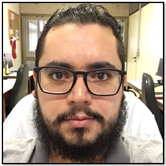

MSc. Thiago Oliveira Lopes

I have a bachelor's degree in Industrial Chemistry at the Universidade Estadual de Goiás, a master's degree in Physical Chemistry at the Universidade de Brasília and I am currently in the phase of completing my Ph.D., in this same institution. My PhD research is focused in Theoretical Chemistry studying new quantitative descriptors to tune new NLO organic frameworks. I have extensive experience and proficiency in computing and programming languages (Bash, Python, Fortran, C, Golang, Ruby, Java and currently I am learning notions of Machine Learning).
I have already worked with research projects in the area of theoretical photophysics, Molecular Dynamics and programming for Quantum Chemistry, which yielded articles in these areas and new papers are coming up. Recently, I published a program that captures the oscillator strengths associated to electronic transitions from Gaussian package outputs, named Sp3ctrum P4tronus. The program performs a series of gaussian convolutions to simulate an experimental UV-vis spectrum. The main focus of the program is to overlay these "simulated spectra" of uncorrelated frames determined from Molecular Dynamics, but the same program has the ability to do this simulation for a single point calculation. The source code is available in my Git Hub profile.
As an undergraduate, I spent two semesters developing researches in the area of Bioequivalence and Pharmaceutical Equivalence. I had almost two years of experience in the Pharmaceutical industry, working mainly with the development of analytical methods for Quality Control and for Pharmaceutical Development. I worked as Teacher Assistant (TA) in Thermodynamics for 1 year at the Universidade de Brasília granted with a CAPES scholarship.
Currículo Lattes / Twitter / Linkedin / ResearchGate